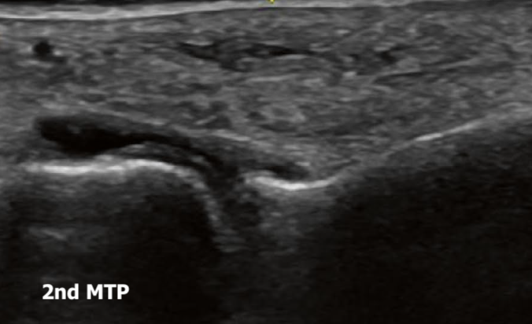
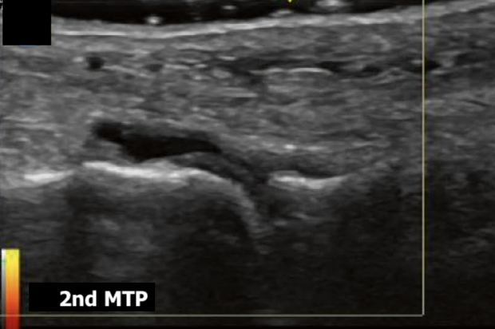
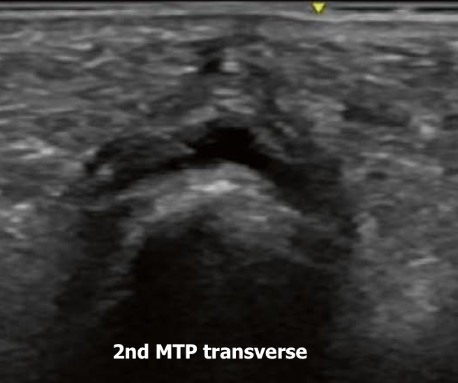
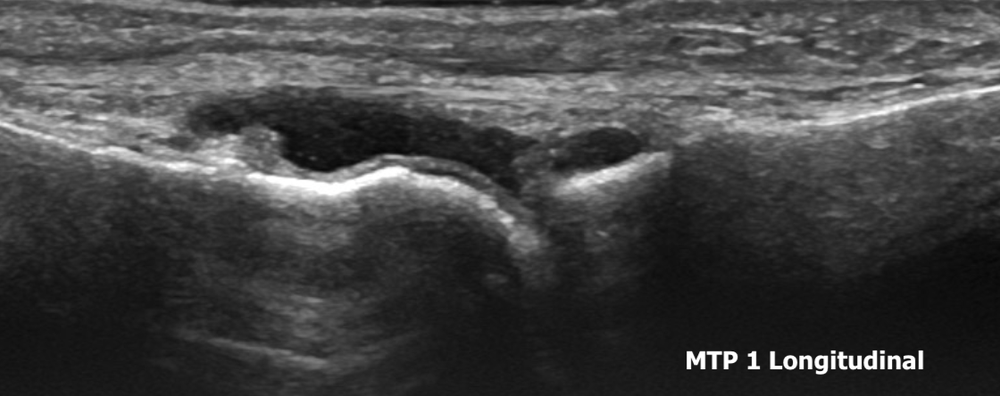

Case 2
Case 2
Case Vignette
A 55-year-old female is seen in the Rheumatology clinic for bilateral foot pain. (Expand for full history & exam.)
A 55-year-old female is seen in the Rheumatology clinic for consultation due to bilateral foot pain. Her pain comes on mostly when she goes for longer walks and improves with rest. There is no prolonged morning stiffness, and she has not noticed any overt clinical swelling. There is no joint pain in the proximal lower extremities or in the upper extremities, and she has no extra-articular manifestations of inflammatory arthritis.
She works a desk job. She does not smoke or drink. She has mild dyslipidaemia and pre-diabetes.
On examination, her BMI is 28 and vitals are normal. There is mild pes planus bilaterally and tenderness at all the MTP joints, but no clinical swelling. There are no toe deformities and no tophi. The rest of the examination is normal, with no other swollen or tender joints.
X-rays are normal. Serology is negative for RF, anti-CCP and ANA, and HLA-B27 is negative. CRP is 6.4 mg/L.
Her mother had rheumatoid arthritis which affected the feet, so she is concerned this is the start of RA in her. You decide to perform a bedside MSK ultrasound of her MTPs.
Bedside Ultrasound — Metatarsophalangeal Joints






The effusion is accentuating the cartilage interface sign — a thin, distinct bright line sitting right above the dark (hypoechoic) articular cartilage, accentuated when there is hypoechoic or anechoic material (synovitis or effusion) within the joint. It is often confused with the double contour sign of gout, and can be differentiated by compressing the effusion or dynamically moving the joint or probe: the interface sign will disappear or change with probe angle, whereas the double contour sign should persist.
There is no significant osteoarthritis really seen on these images. There is no Doppler synovitis, and no significant grey-scale synovitis or synovial hypertrophy.
The images essentially show effusion/fluid at the MTP joints in two planes without Doppler. A small amount of MTP joint effusion is a well-recognised normal ultrasound finding, particularly at the 1st MTP, and isolated effusion without synovial hypertrophy or Doppler signal has relatively poor specificity for inflammatory arthritis. It can be seen in the general population, in early OA, and in those with structural foot/ankle issues (e.g. pes planus). It is a common mistake among beginners to call normal physiological fluid an abnormality or pathology, and to label the patient as having inflammatory arthritis — be careful with this common mistake.
In this case, her symptoms, exam and blood work all point away from an inflammatory arthritis, and the ultrasound confirms that.
Bedside Ultrasound — MTP Joint (annotated)
Calcium deposition seen with CPPD shows hyperechoic foci or bands located within the hyaline cartilage, without posterior acoustic shadowing (unless very large or calcified).

Synovial hypertrophy is abnormal hypoechoic (relative to subdermal fat, though it may be isoechoic or hyperechoic) intra-articular tissue that is non-displaceable and poorly compressible, and may exhibit Doppler signal — there will be no Doppler in fluid/effusion.